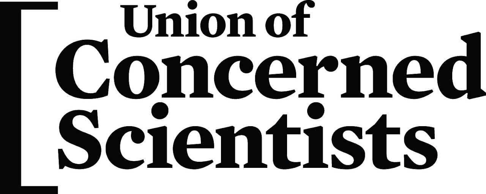
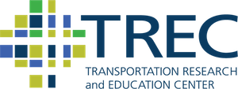
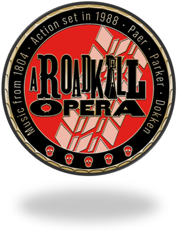

Opening plenary
Introduction by Celeste Chavis, a keynote by Olatunji Oboi Reed, and discussion with Jesus Barajas.
View the slides2026 Convening
Overview
Crossroads: A Transportation Equity and Justice Convening was held at the Martin Luther King Jr. Memorial Library in Washington, D.C. on January 15, 2026. The event brought together transportation scholars, practitioners, advocates, and activists working toward an equitable and just transportation system to share ideas, energy, and connection as we navigate ongoing transportation needs and a shifting political landscape.
The day opened with a keynote by Olatunji Oboi Reed, President and CEO of Equiticity, followed by four presentation tracks of three sessions each, a lunchtime poster session, and a closing plenary asking "Where do we go from here?"
Our conference report covers the keynote, every session track, and the closing plenary, along with what we learned and where we go next.
Recordings
Introduction by Celeste Chavis, a keynote by Olatunji Oboi Reed, and discussion with Jesus Barajas.
View the slidesFeaturing Naomi Doerner, Gretchen Goldman, Anna Zivarts, and Stephanie Gidigbi Jenkins, moderated by Alex Karner.
The detailed program from January 15, 2026. Tabs at the bottom of the sheet link to more session details.
Sponsors

The Union of Concerned Scientists generously provided foundational financial support to make Crossroads a success.


Interested in sponsoring a future convening? Email us at crossroadsconvening@gmail.com.
The next Crossroads is planned for spring 2028, with webinars in the meantime.
See what's next